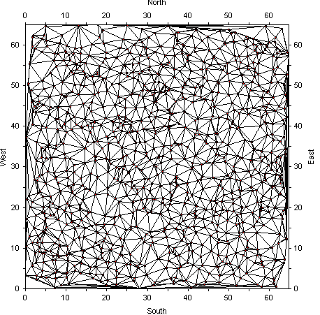

TIN Tools
Geo-F/X has a robust proprietary library of tools that provide the capability of building TIN (triangulated irregular networks) from files of X-Y-Z coordinates or grids. The resulting net can be analyzed or mapped using threaded contours - stroked or filled.
The library can handle mesh sizes of over one million points and is optimized for very rapid execution.
The illustration below is a very simple mesh of approximately one thousand points.
